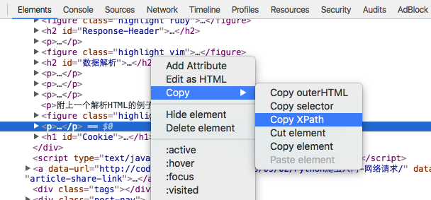

介绍了许多语法基础，我们终于可以进入爬虫开发的正文了，就爬虫工具而言，Python对比于其他的语言有很大的优势，它内置的模块提供了强大的网络请求、数据处理功能。
URL Operation
URL 作为网络请求最基础的部分，这里需要介绍一下 Python 的 URL 处理。
编码 & 解码
url = 'https://www.test.com/photos?order_by=latest&page=%d&per_page=%d' (pageIndex, pageSize) |
这是最简单的字符串拼接方式，在前面也有提过，不再展开。
假如我们有一个dict需要转成 URL 的 query 字符串，可以使用下面的方法：
>>> import urllib.parse |
你是不是注意到有一些字符被自动转码为带有%的格式，除了这个，urllib.parse 还提供了其他的方法：
quote(string, safe=’/‘, encoding=None, errors=None)
对字符串进行编码，参数 safe 指定了不需要编码的字符
unquote(string, encoding=’utf-8’, errors=’replace’)
对字符串进行解码
quote_plus(string, safe=’’, encoding=None, errors=None)
与 quote 类似，但这个方法用
'+'来替换' '，而 quote 用'%20'来代替' 'unquote_plus(string, encoding=’utf-8’, errors=’replace’)
对字符串进行解码
urlencode(query, doseq=False, safe=’’, encoding=None, errors=None, quote_via=<function quote_plus at 0x10147ff28>)
将dict或者包含两个元素的元组列表转换成url参数
解析 URL
> from urllib import parse |
发起请求
一个完整的网络请求、解析过程：
from urllib import request |
Request Header
从上面的代码可以到在初始化 Request 的时候可以传递 headers、data 参数，其中 header 是 dict 对象，data 是 body 编码后的 bytes 数据。
在初始化 Request 之后，还可以通过下面的方法设置 Header 参数。
req.add_header(kye, value) |
Request Body
要传递的 body 可以是表单形式，也可以是 json 格式，最终都是字符串编码为 bytes 数据流，文件表单这里不做讨论，用的比较少。
表单形式的 body
from urllib import parse
>>>
values = {'action': 'InsertPicReptile',
'url': 'http://www.google.com',
'title': '标题',
'sourceId': 10,
'uniqueId': 1122}
body = parse.urlencode(values)
data = body.encode('utf-8')
print(data)
b'action=InsertPicReptile&sourceId=10&title=%E6%A0%87%E9%A2%98&url=http%3A%2F%2Fwww.google.com&uniqueId=1122'json 形式的 body
import json
>>>
values = {'action': 'InsertPicReptile',
'url': 'http://www.google.com',
'title': '标题',
'sourceId': 10,
'uniqueId': 1122}
body = json.dumps(values)
data = body.encode('utf-8')
print(data)
b'{"action": "InsertPicReptile", "sourceId": 10, "title": "\\u6807\\u9898", "url": "http://www.google.com", "uniqueId": 1122}'
MD5
接口请求经常会在Header或URL参数上增加校验参数，MD5加密算法是比较常用的不对成加密算法。Python已经封装了常用的加密算法，这里以MD5为例：
> import hashlib |
Response Header
前文完整的请求示例中屏蔽掉的 print(f.info()) 可以用于获取 HTTP 请求的 Response Header。
# 提取 Header 信息 |
数据解析
body 读取出来是 bytes 数据，需要经过编码转成 str，目前主流编码格式为 utf-8，不排除其他编码格式的可能，转成 str 以后，理想状态下我们希望它是 json 字符串，使用 json.loads() 方法很方便就可以解析出来。遗憾的是需要爬取数据的网站大部分是不提供或者不对外提供 json 接口，因此我们只能解析 HTML 文本。Python 自带的 HTML 解析库比较不方便使用，在开发爬虫工具的过程中接触了两个第三方库： Beautiful Soup 和 lxml。
Beautiful Soup 支持不同的解析器，包括 Python 标准库、lxml、html5lib，不过捣鼓了半天愣是没学会怎么用 BS 基于 lxml 支持的 xpath 来提取所需节点，最终选择直接用 lxml 来解析 HTML 文本。
lxml 的安装还是挺纠结的，笔者觉得除了缺少梯子的问题，它的文档都是英文的也是个问题，最终是通过 Anaconda Navigator 安装上的，如果读者有好的安装方法，麻烦花点时间给笔者留个言。
附上一个解析HTML的例子：
from urllib import request |
从上面的例子可以看到 tree 通过 xpath() 检索出来的 element 可以继续调用 xpath() 方法查找指定节点。
XPath 是一门在 XML 文档中查找信息的语言，可用来在 XML 文档中对元素和属性进行遍历，有点类似css的选择器，详细的语法请移步XPath教程。
通过 Chrome 浏览器可以很快得到我们需要的 XPath 路径：

这个方法可以得到大部分我们需要的或者接近需要的 xpath，但是笔者目前知道的有一种例外情况，那就是伪元素，包含伪元素的 xpath 路径，通常无法正常解析出目标元素，只能检索到伪元素的上层元素，再通过遍历的手段获取到所需的目标元素。
Cookie
爬虫中的 Cookie 的操作主要是为了存储登录信息，遗憾的是模拟登录表单、缓存、上报 Cookie 都还不会，此处只能留白了。